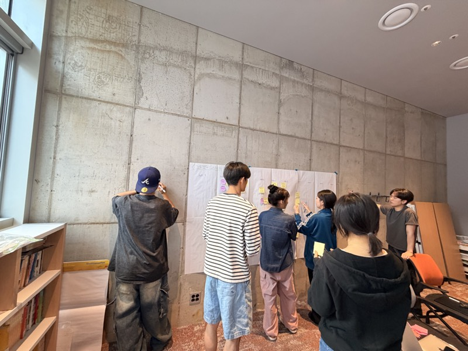

K-Pipe
하수관로 CCTV 조사 보고서 작성 프로그램. 실무자가 불편해하는 기존 단일 프로그램을 고쳐 만든다. 윈도우 설치형.
현재 단계Pipe Asset 분석 보고서
노션에서 자세히 →데이터 분석 · 디자인 · 프로토타입으로 끝까지 풀어냅니다.
리모(REMO) 협동조합의 미션. 팀 노션에 기록된 문장 그대로다.
비전 · 2년차
혼자가 아닌 팀으로 선순환하며, 시장의 평가 속에서 성장한다.
가치 · 다섯 가지
지금 분기 목표 · 2026.09 → 2026.12
팀이 서로 연결되어 협업할 수 있는 시스템을 구축한다.
의사결정 기준: 1차 만장일치 → 2차 80% → 3차 60%
팀 진단 도구(REMO OS)의 관계 데이터. 노드에 이름은 없다.
부딪히기 쉬운 · 말이 엇갈리는 관계는 팀 내부 도구에만 있다.
넷 다 진행 중이다. 상세 기획과 기록은 노션에 있다.
하수관로 CCTV 조사 보고서 작성 프로그램. 실무자가 불편해하는 기존 단일 프로그램을 고쳐 만든다. 윈도우 설치형.
현재 단계Pipe Asset 분석 보고서
노션에서 자세히 →현재 단계경쟁사 분석
노션에서 자세히 →노션 템플릿을 만들어 크라우드펀딩으로 수요를 검증한다.
현재 단계디자인 마감, 펀딩 준비
노션에서 자세히 →"불안하면서 꿈꾸는 사람들"을 위한 의류 브랜드. 첫 제품을 텀블벅 펀딩으로 낸다.
현재 단계펀딩 2026.09.23 → 10.07 (예정)
노션에서 자세히 →
포지션과 담당은 팀원 본인이 제출한 것만 싣는다. 아직 제출 전이다.
이메일 한 줄 대신 이 폼을 씁니다. 문제를 설명하는 데 시간을 들일 수 있는 분과 일하고 싶어서입니다.